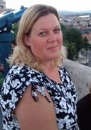

 Fótiné Kosznovszki Andrea
gyógymasszőr,
általános ápoló,
diplomás pedagógus
Vidámság, pozitív szemlélet, empátia, segítőkészség. Ezek mentén próbálom az életemet alakítani.
Gyermekként sebész szerettem volna lenni, ez nem valósult meg. Sok minden más igen: dolgoztam többek között csecsemőgondozóként, óvodapedagógusként, ápolóként a Magyar Máltai Szeretetszolgálatnál. Így a szakmai tudásom mellé rengeteg tapasztalatot szereztem az emberi lélek megismeréséhez melyet munkám során kamatoztathatok.
2010-ben végeztem el svédmasszőr majd gyógymasszőr képzést. Gyakorlatomat a Lukács Gyógyfürdőben töltöttem és ott is vizsgáztam. A következő két évben masszőrként dolgoztam. Vágyam, hogy saját szalont nyithassak, egy ideig még váratott magára.
Most újult erővel, tele energiával, szakmai tudásomat újabb képesítésekkel bővítve fogtam bele álmaim megvalósításába. Egy olyan barátságos légkört és magas színvonalú kezelést biztosító masszázsszalon megnyitásába, ahol a hozzám érkező vendég testi és lelki egészsége egyaránt fontos.
„Senkit se eresszetek útjára úgy, hogy jobbá és boldogabbá ne tennétek!” (Teréz anya)
F. Andi